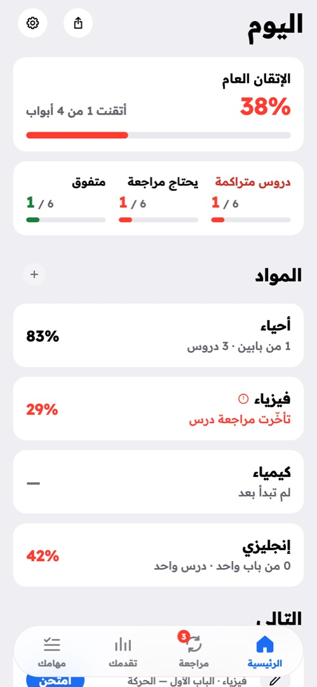
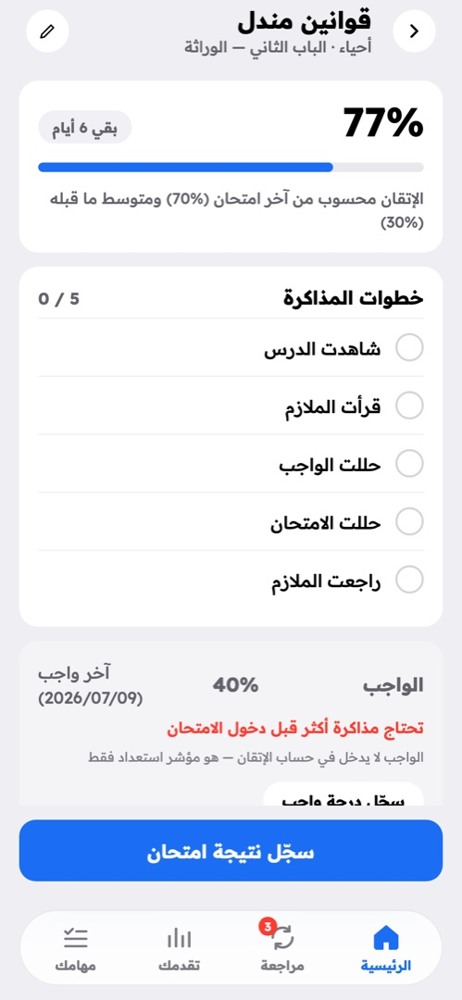
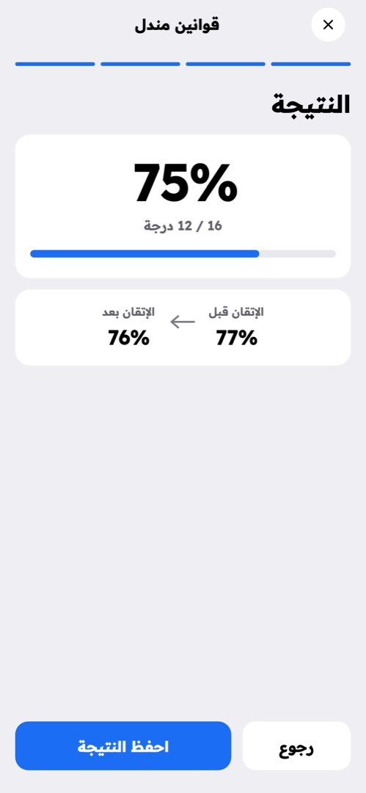
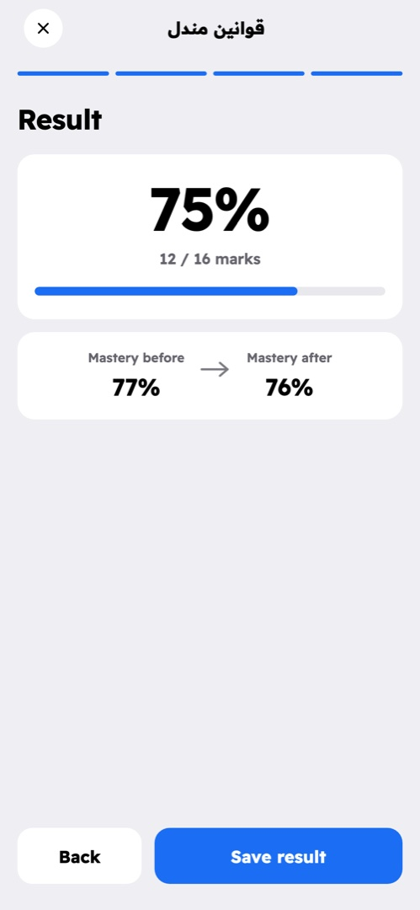

أثر يقيس إتقانك من امتحاناتك الحقيقية وحدها — لا من عدد الدروس التي شطبتها.
حمّل أثرلا يوجد في التطبيق زر «راجعت الدرس» يرفع رقمك. الطريقة الوحيدة لتحريك الرقم أن تدخل امتحاناً وتسجّل نتيجته. الواجب يُسجَّل ولا يدخل في الحساب — هو مؤشر استعداد فقط، لأن درجة واجب جيدة أسهل ما يُخلط بينه وبين الفهم.
لكل درس عدّاد مراجعة مدته 30 يوماً. إذا مرّ الموعد، يقول لك التطبيق ذلك ولا يجمّل الرقم. عدّاد المراجعة لا يُصفَّر إلا بامتحان جديد.
كل شيء محفوظ على هاتفك في قاعدة بيانات محلية، والحساب يُطلب مرة واحدة عند أول تسجيل دخول. بعدها يعمل التطبيق كاملاً وأنت في الأتوبيس.
لا إعلانات، ولا تتبّع، ولا مشاركة مع طرف ثالث. نسخ المتجر ترسل تقارير أعطال فنية إلى Firebase Crashlytics — تفاصيل العطل فقط، ولا شيء من سجل دراستك. سجل دراستك موجود في موضعين فقط: هاتفك، ونسخة احتياطية على حسابك أنت وحدك تصل إليها.



موادك — الأربعة التي يبدأ بها التطبيق أو ما تضيفه أنت — ثم الأبواب، ثم الدروس، ثم نتائج الامتحانات. ومعها مهام يومك، وتقارير تقول لك أي باب أضعف وأي درس تأخّرت عن مراجعته.
أندرويد 7 فأحدث، ٦٤-بت · كل النسخ وبصماتها
Ather measures mastery from your real exam results alone — not from how many lessons you have ticked off.
Get AtherThere is no "I reviewed this" button anywhere in the app that raises your number. The only way to move it is to sit an exam and record the result. Homework is logged but never counted — it is a readiness signal, because a good homework score is the easiest thing to mistake for understanding.
Every lesson carries a 30-day review clock. Once it passes, the app says so rather than flattering the number. Nothing resets that clock but another exam.
Everything lives on your phone in a local database. An account is asked for once, at first sign-in; after that the whole app works on the bus.
No ads, no tracking, no third-party sharing. Store releases do send technical crash reports to Firebase Crashlytics — failure details only, never your study record. Your study record exists in exactly two places: your phone, and a backup under your own account that only you can reach.

Your subjects — the four it ships with, or any you add — then chapters, then lessons, then exam results. Alongside them: a daily task list, and reports naming your weakest chapter and the lessons you are overdue to review.
Android 7+, 64-bit · All versions and their checksums